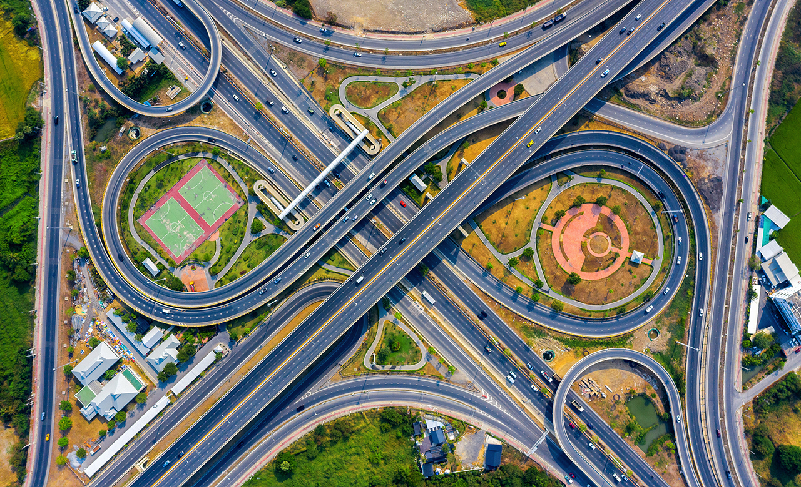

Connectivity

Connectivity is one of the key factors that influence the quality of everyday life, and Sobha Liora Connectivity reflects this advantage through its strategic location in Immadihalli, Whitefield, East Bangalore. Planned as a premium residential community across 7 acres, Sobha Liora offers residents easy access to metro services, IT parks, hospitals, schools, shopping destinations, and major road corridors.
As Sobha Whitefield prepares for its official launch, the project's location has become one of its strongest highlights. Whitefield has developed into a self-sustained urban neighbourhood where residential communities coexist with commercial hubs, educational institutions, and lifestyle facilities. For homebuyers, this means shorter daily commutes and greater convenience for everyday needs.
Located in Immadihalli, Sobha Liora enjoys the benefits of being positioned within one of Bangalore's most developed residential corridors. Whitefield has grown significantly over the last decade due to continuous infrastructure improvements, commercial expansion, and enhanced public transportation.
The project's location allows residents to stay connected to major employment centres while also enjoying access to established civic infrastructure. Whether travelling for work, education, healthcare, or leisure, most destinations are within a comfortable driving distance.
One of the biggest advantages of Sobha Liora Connectivity is its proximity to the Kadugodi (Whitefield) Metro Station, which has significantly improved public transport across East Bangalore.
The metro network offers faster travel to various parts of the city while reducing dependence on road traffic. For professionals working in Whitefield's technology corridor, metro connectivity provides a practical and time-efficient commuting option.
| Metro Station | Approx. Distance |
|---|---|
| Kadugodi (Whitefield) Metro Station | 4 km |
| Hopefarm Channasandra Metro Station | 5 km |
Whitefield remains one of Bangalore's leading technology destinations, making the location attractive for professionals.
| IT Hub | Approx. Distance |
|---|---|
| International Tech Park Bangalore (ITPL) | 4 km |
| Prestige Shantiniketan Business Hub | 3.5 km |
| Bagmane Tech Park | 6 km |
| Embassy Tech Village | 7 km |
The availability of major employment centres nearby helps reduce travel time and supports a better work-life balance for residents.
Healthcare accessibility is another important advantage of the project location. Several reputed multi-speciality hospitals are located within a short drive from Sobha Liora.
| Hospital | Approx. Distance |
|---|---|
| Cloudnine Hospital Whitefield | 3 km |
| Svastha Hospital | 3 km |
| Manipal Hospital Varthur | 4 km |
| Vydehi Hospital | 4 km |
This network of healthcare facilities ensures that routine medical care and emergency services remain easily accessible.
Families with children benefit from the presence of well-established schools and colleges surrounding the project.
| Institution | Approx. Distance |
|---|---|
| MVJ College of Engineering | 2 km |
| Whitefield Global School | 2 km |
| VIBGYOR High School | 3 km |
| Delhi Public School Bangalore East | 6 km |
The availability of quality educational institutions reduces daily travel for students and provides added convenience for families.
Living in Whitefield also means having access to numerous retail and entertainment centres.
| Mall | Approx. Distance |
|---|---|
| Nexus Whitefield | 3 km |
| Park Square Mall | 4 km |
| Inorbit Mall Whitefield | 7 km |
| Phoenix Marketcity | 9 km |
These destinations offer shopping, dining, entertainment, supermarkets, multiplexes, and lifestyle services, making everyday living more convenient.
The location of Sobha Liora offers more than just good transportation. It places residents within a mature neighbourhood where essential services are already well established.
Some of the major lifestyle advantages include:
These factors contribute to a comfortable living environment while reducing the need for long daily commutes.